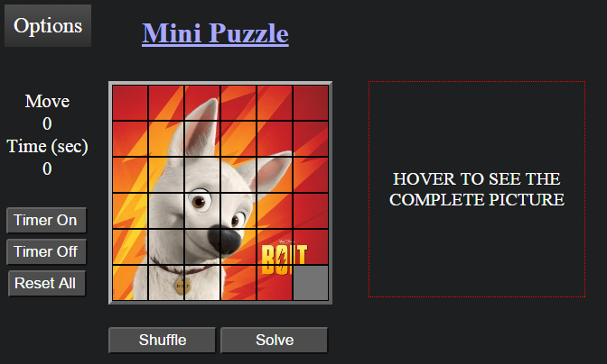

Mini-puzzle
A simple browser based mxm cell puzzle game
Download
Download
View Mini-puzzle on GitHub
Hi,
Thanks for visiting my page.
Click here to Play The Game
Screenshot :

Scroll to top
tar
zip
source code